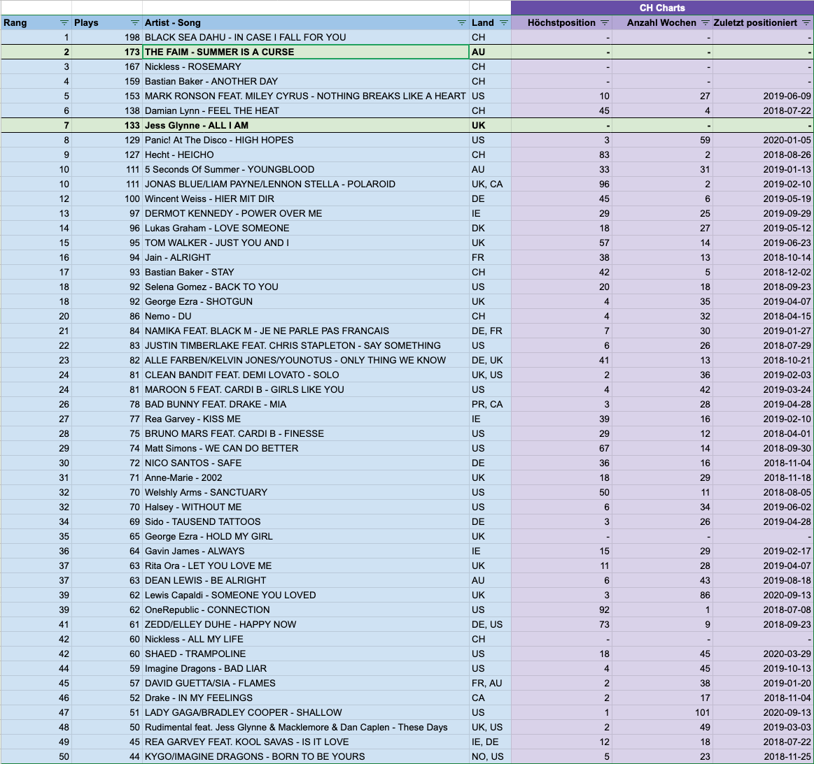

SRF3: The Faim 'Summer Is A Curse'
- Station: SRF3
- Zeitspanne: 01.01.2020 - 27.09.2020
Ausgangslage
Ursprünglich wollte ich herausfinden, wie oft Mark Ronson’s “Nothing Breaks Like A Heart” gespielt wird: 153 Mal in 2020, im Schnitt alle 43 Stunden.
Dieses Resultat überrascht, da das Lied 2018 erschienen ist.
Zum Vergleich: Das Lied “Dance Monkey” von Tones And I aus dem Jahre 2019 wurde bisher 159 Mal gespielt, im Schnitt alle 41 Stunden. Die Differenz der Plays der beiden Songs ist ziemlich gering.
Mögliche Kriterien
Weshalb wird “Nothing Breaks Like A Heart” ähnlich oft gespielt wie “Dance Monkey”, obwohl es älter ist? Schauen wir uns mögliche Kriterien an:
- Erscheinungsjahr, also “aktueller = bevorzugter”?
- Chart-Platzierung, also “erfolgreicher = bevorzugter”?
- Chart-Dauer, also “länger in den Charts = bevorzugter”?
Hier ein Vergleich dieser Kriterien:
| Nothing Breaks Like A Heart | Dance Monkey | |
|---|---|---|
| Erscheinungsjahr | 2018 | 2019 |
| Höchstposition CH Charts | 10 | 1 |
| Anzahl Wochen in CH Charts | 27 | 57 |
“Dance Monkey” gewinnt in allen drei Faktoren. Müsste die Differenz der Plays also nicht grösser/deutlicher sein?
Oder ist vielleicht die generelle Popularität des Künstlers ausschlaggebend? Quasi “Mark Ronson ist grundsätzlich bekannter als Tones And I” und wird deshalb öfter gespielt? Warum aber ausgerechnet “Nothing Breaks Like A Heart” und nicht beispielsweise “Uptown Funk” (erschienen 2014, 13 Plays in 2020)?
Rangliste der Songs aus 2018
Also nächster Versuch: Rangliste erstellen aller Lieder die im 2018 erschienen sind und dann vergleichen (siehe ganz unten). Das Resultat war erneut verblüffend, aber nicht direkt wegen “Nothing Breaks Like A Heart”, sondern wegen The Faim’s “Summer Is A Curse”.
Dieses Lied liegt auf Platz 2 der meistgespielten Lieder dieses Jahres, die im 2018 erschienen sind. Es wurde 2020 bereits 173 Mal gespielt, im Schnitt alle 38 Stunden.
“Summer Is A Curse” hatte nie eine Chartsplatzierung, wird jedoch öfters gespielt als “Nothing Breaks Like A Heart”. Und wer genau ist “The Faim”? Das vermutete Kriterium generelle Popularität wird bevorzugt mag ich anzuzweifeln.
Ein ähnliches Phänomen gibt’s bei dem Lied “All I Am” von Jess Glynne. Sie hat 133 Plays, wird durchschnittlich alle 49 Stunden gespielt. Auf der 2018-er Rangliste liegt dieses Lied auf Platz 7. “All I Am” war auch nie in den CH Charts.
Zusätzlicher Vergleich: George Ezra’s “Shotgun” liegt in gleicher Rangliste auf Platz 18: 92 Plays, alle 71 Stunden. Diese Lied erreichte Platz 4 in der CH Hitparade und war da ganze 35 Wochen lang vertreten. Irgendwie komisch, nicht?
